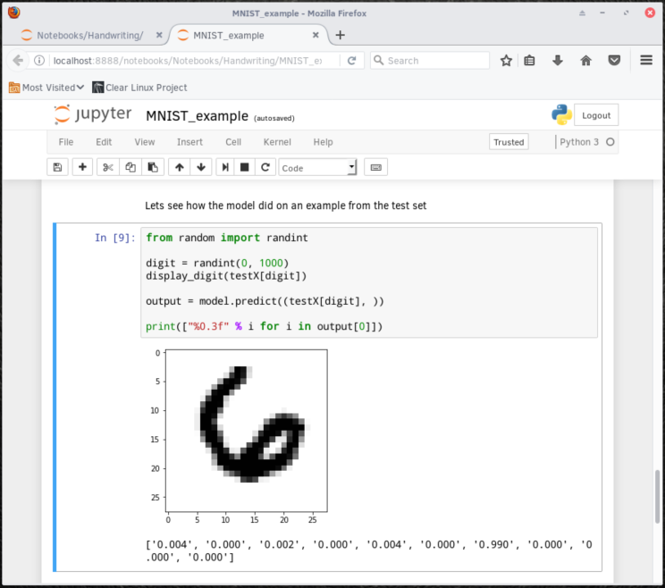

This tutorial demonstrates the installation and execution of a TensorFlow*
machine learning example on Clear Linux* OS. It uses a Jupyter* Notebook and MNIST
data for handwriting recognition.
The initial steps show how to set up a Jupyter kernel and run a Notebook
on a bare-metal Clear Linux OS system.
This tutorial assumes you have installed Clear Linux OS on your host system. For
detailed instructions on installing Clear Linux OS on a bare metal system, follow the
bare metal installation tutorial.
Before you install any new packages, update Clear Linux OS with the following command:
sudoswupdupdate
After your system is updated, add the following bundles to your system:
machine-learning-web-ui: This bundle contains the Jupyter application.
machine-learning-basic: This bundle contains TensorFlow
and other useful tools.
To install the bundles, run the following commands in your $HOME
directory:
With all required packages and libraries installed, set up the file structure
for the Jupyter Notebook.
In the $HOME directory, create a directory for the Jupyter
Notebooks named Notebooks.
mkdirNotebooks
Within Notebooks, create a directory named Handwriting.
mkdirNotebooks/Handwriting
Change to the new directory.
cdNotebooks/Handwriting
Copy the MNIST_example.ipynb file into the Handwriting
directory.
Note
After installing the machine-learning basic bundle, you can find the example code under
/usr/share/doc/tensorflow/MNIST_example.ipynb.
The example code downloads and decompresses the MNIST data directly into the
./mnist directory. Alternatively, download the four files directly
from the Yann LeCun’s MNIST Database website and save them into a
mnist directory within the Handwriting directory.
With Clear Linux OS, Jupyter, and TensorFlow installed and configured, you can
run the example code.
Go to the ($HOME)/Notebooks directory and start Jupyter with the
following commands:
cd~/Notebooks
jupyternotebook
The Jupyter server starts and opens a web browser showing the Jupyter file
manager with a list of files in the current directory, as shown in
Figure 1.
Figure 1: The Jupyter file manager shows the list of available files.¶
Click on the Handwriting directory. The MNIST_example.ipynb
file created earlier should be listed there, as shown in Figure 2.
Figure 2: The example file within the Jupyter file manager.¶
To run the handwriting example, click on the MNIST_example.ipynb
file to load the notebook, as shown in Figure 3.
Figure 3: The loaded MNIST_example notebook within the Jupyter file
manager.¶
Click the button to execute the code in the current cell and
move to the next.
Select the In [2] cell and click the button to load
the MNIST data. The successful output is shown on Figure 4.
Figure 4: Output after successfully importing the MNIST data.¶
After the MNIST data is successfully downloaded and extracted into the
mnist directory within the ($HOME)/Notebooks/Handwriting
directory, four .gz files are present and the four data sets are created:
trainX, trainY, testX and testY.
To inspect the imported data, the function in In [3] first
instructs Jupyter to reshape the data into an array of 28 x 28 images and to
plot the area in a 28 x 28 grid. Click the button twice to show
the first two digits in the trainX dataset. An example is shown in
Figure 5.
Figure 5: A function reshapes the data and displays the first two
digits in the trainX dataset.¶
The In [4] cell defines the neural network. It provides the
inputs, defines the hidden layers, runs the training model, and sets up
the output layer, as shown in Figure 6. Click the button four
times to perform these operations.
Figure 6: Defining, building, and training the neural network model.¶
To test the accuracy of the prediction that the system makes, select the
In [8] cell and click the button. In this example,
the number 6 was predicted with a 99% accuracy, as shown in Figure 7.

Figure 7: The system predicts a number providing the accuracy of the
prediction.¶
Note
To retest the accuracy of a random data point’s prediction, run the
cell In [8] again. It will take another random data point
and predict its value.
To check the accuracy for the whole dataset, select the In [10]
cell and click the button. Our example’s accuracy is
calculated as 97.17%, as shown in Figure 8.
Figure 8: The system’s accuracy for the entire data set.¶
You have successfully installed a Jupyter kernel on Clear Linux OS. In addition, you
trained a neural network to successfully predict the values contained in a
data set of hand-written number images.

 button to execute the code in the current cell and
move to the next.
button to execute the code in the current cell and
move to the next.